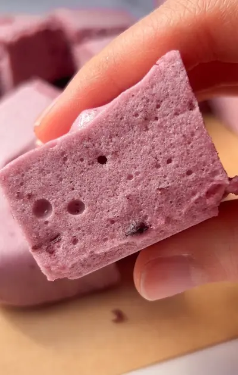

Healthy Cherry Marshmallows (fluffy pink 5-ingredient clouds)
marshmallows have become a bit of a thing in my kitchen lately. the matcha version has been one of my most viral recipes this year, and after so many requests for a different flavour combination (not everyone's team matcha, some people think it tastes like grass lol), i had to make another version.
and these cherry marshmallows were the perfect summer flavour. not only are they the cutest shade of pink you've ever seen, but they have just the right touch of cherry, not too overpowering but so refreshing.
if you haven't made homemade marshmallows before, they're much easier than they look. they're also nothing like a shop-bought marshmallow, soft, stretchy and pillowy in a way you just don't get from a bag. for lack of a better way to explain it, they just taste fresh, like how marshmallows are supposed to taste.
the gelatin is the key ingredient here. it's a protein derived from animal collagen, and it's what gives marshmallows their structure and that signature chewy texture. this recipe isn't vegan, and for most vegetarians it won't be suitable either unless you can find a plant-based gelatin substitute, i haven't tested it with agar agar so i can't speak to how that would turn out.
homemade marshmallows may seem intimidating, but it's a pretty easy, repeatable process if you just follow the steps. they're actually quite foolproof, but i'll run through some troubleshooting too just in case.
the blooming step is absolutely crucial. you add the gelatin to cold water and simply let it sit, don't stir or mix, just leave it alone for at least 5 to 10 minutes. during this time the granules absorb the water and swell into a thick, rubbery mass. you'll know the blooming stage is over once the water's all been absorbed and it looks more like a thick mixture, with no water sitting on top of the gelatin anymore.
skipping the blooming step or rushing it means the gelatin won't dissolve completely when you add the hot liquid, and you'll get lumpy, unevenly set marshmallows. this is quite literally one of the most important steps in making marshmallows, one i used to skip, and then wonder why i could never get them right.
for brands of gelatin, i've used both Ossa Organics and Solara by Mystically Well and had success with both. aside from the gelatin, the second star of this recipe is the cherries. the cherry liquid is what gives these marshmallows their colour and flavour. we use 100g of frozen (or fresh) cherries with the maple syrup and 1/4 cup of water, heated on medium heat for about 5 to 10 minutes.
the key instruction here is do not let it boil. gelatin starts to lose its setting ability when it meets liquid that's too aggressively hot. you want the mixture hot enough to fully dissolve the bloomed gelatin when it's poured in, but not at a full boil. medium heat for about 5 to 10 minutes, watching the edges for too much bubbling. when the cherries have softened and broken down and the liquid is steaming but not bubbling hard, pull it off the heat.
at this point you can decide to either strain the liquid, if you don't want any cherry pieces in the marshmallows, or leave it as is. i personally never strain it, i really like the cherry pieces, they add extra flavour and texture, and it's one less step.
from there, the stand mixer does most of the work. with the mixer on medium speed, let it break up the bloomed gelatin for a couple of seconds, then pour the hot cherry liquid in slowly. once it's all in, increase to high speed and leave it for 6 to 8 minutes. as the gelatin mixture cools, the whipping motion traps millions of tiny air bubbles inside it, and as the gelatin starts to set, those air bubbles get locked in permanently. at 3 minutes the mixture will look thin with a bit of foam on top, by 6 or 7 minutes it should be dramatically thicker, pale bubblegum pink, and almost doubled in volume. i've found that with a weaker stand mixer you may need to go up to 12 minutes, but most stand mixers are high powered enough that you won't. when you lift the whisk and the mixture holds a ribbon for a second before folding back in, that's the sign you're ready to pour.
the biggest tip is to work fast at this point, and i do mean fast. have your lined tray on the counter before you even start the mixer so you're not hunting for it with the mixture setting in the bowl (trust me, you don't want this to happen, speaking from experience lol). pour it all in and smooth the top quickly with a lightly wet spatula or the back of a spoon, i use a 20cm/8 inch square tin, then pop it straight into the fridge. four hours minimum, overnight gives an even cleaner set and makes slicing much easier the next day.
on the nutrition side, gelatin is an underrated ingredient. it's almost entirely protein in the form of collagen peptides, specifically the amino acids glycine, proline and hydroxyproline, the amino acids most involved in maintaining connective tissue, supporting gut lining integrity and joint health. glycine in particular has been studied for its role in reducing inflammation and supporting sleep quality. gelatin isn't a complete protein since it's missing several essential amino acids, but as a collagen-specific protein source, it's one of the most concentrated available.
for cutting, a sharp knife run under hot water (and dried before cutting) is the cleanest approach. the warmth stops the knife dragging through the marshmallow, though honestly they're pretty easy to cut once properly set. if the pieces stick to each other once sliced, a light dusting of arrowroot starch or tapioca flour on the cut surfaces sorts that out completely. store them in an airtight container in the fridge for up to a week.
if you want an easier way to ease into making your own marshmallows, start with my vanilla bean marshmallow fluff, it's the perfect stepping stone before making full homemade marshmallows.
or if you're looking for something completely different but equally satisfying for a summer sweet treat, my no-bake strawberry coconut bites are super refreshing and perfect for a hot day.
Frequently Asked Questions
Is this recipe vegan or vegetarian?
No. This recipe uses gelatin, which is derived from animal collagen and is not suitable for vegans or most vegetarians. Some people use agar agar as a plant-based substitute for gelatin in marshmallow recipes, but the ratios and method are different and I haven't tested this recipe with agar agar, so I can't guarantee how it would turn out.
Can I use fresh cherries instead of frozen?
Yes, fresh cherries work fine here. The reason the recipe uses frozen is convenience and availability across seasons, but fresh pitted cherries will give you the same result. You may get a slightly brighter, more intense cherry flavour from fresh cherries in peak season. Either way, the method is identical.
How long do cherry marshmallows last and how should I store them?
Store them in an airtight container in the fridge for up to a week. Unlike shop-bought marshmallows, homemade marshmallows made with real fruit and no preservatives are best kept cold. If the pieces start sticking together, a light dusting of arrowroot starch or tapioca flour on the cut surfaces keeps them separate. I wouldn't recommend leaving them at room temperature for more than an hour or two as they can become sticky and lose their shape.
My marshmallows didn't set properly. what went wrong?
The two most common causes are boiling the cherry syrup before adding it to the gelatin, or not blooming the gelatin long enough. Boiling can deactivate the gelatin's setting ability, so make sure the liquid is hot but not at a rolling boil before pouring. Blooming is also non-negotiable: the gelatin needs 5 to 10 minutes in cold water to hydrate properly before you add the hot liquid. Another possibility is that the mixture wasn't whipped long enough, you need 6 to 8 minutes at high speed for the gelatin to aerate fully. If it's still runny-looking after 6 minutes, give it another 2 minutes before pouring. Sometimes you may even need up to 12 minutes depending on the strength of your stand mixer, so don't worry if it's taking longer than the recipe states.
Can I use agar agar instead of gelatin?
I haven't tested this recipe with agar agar so I can't give you a guaranteed result. Agar agar sets differently from gelatin and usually at a different ratio and temperature, so swapping it in directly without adjusting the recipe likely won't give you the same texture. If you're looking for a vegan marshmallow recipe, you'd be better off finding one that's been specifically developed with agar agar rather than substituting it here.
Can I use a different sweetener instead of maple syrup?
Honey works as a direct swap and gives a slightly richer, more rounded sweetness. I'd use the same quantity. Other liquid sweeteners like agave or date syrup should also work in the same quantity, though they'll each bring their own flavour. I wouldn't recommend swapping to a granulated sweetener as the liquid content of maple syrup plays a role in how the cherry syrup comes together.
Can I make these without a stand mixer?
Technically you can use a handheld electric whisk, but you'll need to keep at it for the full 6 to 8 minutes at high speed, and keeping the bowl stable while pouring in the hot liquid at the same time is awkward without a stand mixer. A stand mixer makes this recipe significantly easier and safer. I wouldn't recommend trying to do it by hand. The whipping time is too long and the volume you need to build up requires consistent high speed that's hard to maintain manually.
How do I cut them cleanly?
Run a sharp knife under hot water, dry it, and then slice. The warmth stops the knife from dragging through the marshmallow and sticking. If you find the pieces are sticking together after slicing, dust the cut surfaces lightly with arrowroot starch or tapioca flour, which is what shop-bought marshmallows use to prevent sticking. A pizza cutter also works really well for cutting marshmallows into even squares, especially if you want clean straight edges.
Pro Tips
- Have your lined tray ready before you start the stand mixer. the marshmallow sets quickly once it reaches full volume and you need to pour it immediately.
- Do not let the cherry syrup boil. hot is right, boiling is not. keep it on medium heat and watch the edges of the pan.
- At 6 minutes in the mixer, lift the whisk and check if the mixture holds a ribbon. if it folds back in immediately and looks thin, give it another 1 to 2 minutes.
- Use a hot, dry knife to cut the set marshmallows cleanly. dust cut surfaces with arrowroot starch or tapioca flour if they're sticking to each other.
Healthy Cherry Marshmallows

Ingredients
Instructions
- Step 1: Add the gelatin and 1/2 cup of water to your stand mixer bowl. Let it bloom for 5 to 10 minutes without stirring.
- Step 2: To a saucepan, add the frozen cherries, 1/4 cup of water and maple syrup. Heat on medium for 5 minutes. Do not let it boil.
- Step 3: Turn the stand mixer on medium speed and slowly pour the hot cherry liquid into the bloomed gelatin.
- Step 4: Increase to high speed and whip for 6 to 8 minutes until the mixture is thick, fluffy and pale pink, and holds a ribbon off the whisk.
- Step 5: Working quickly, pour the mixture into a lined baking tray and smooth the top with a wet spatula or spoon.
- Step 6: Refrigerate for 4 hours until fully set.
- Step 7: Slice into pieces and enjoy. Dust with a little arrowroot starch or tapioca flour if the pieces are sticking to each other.
did you make this recipe?
snap a pic & tag @yourwellnessgirly so i can see! i'd love to hear how it went, share ur thoughts and leave a star rating!
Nutrition Facts
Per one serving:
*Nutritional information is estimated and will vary depending on the ingredients and brands you use. Basic macros don't reflect the full nutritional value including vitamins, minerals, antioxidants, and other beneficial compounds. Please use this as a guideline only.
Reviews
Be the first to leave a review
Leave a review
Thanks for your review! It's now live. 💗
No reviews yet — be the first!